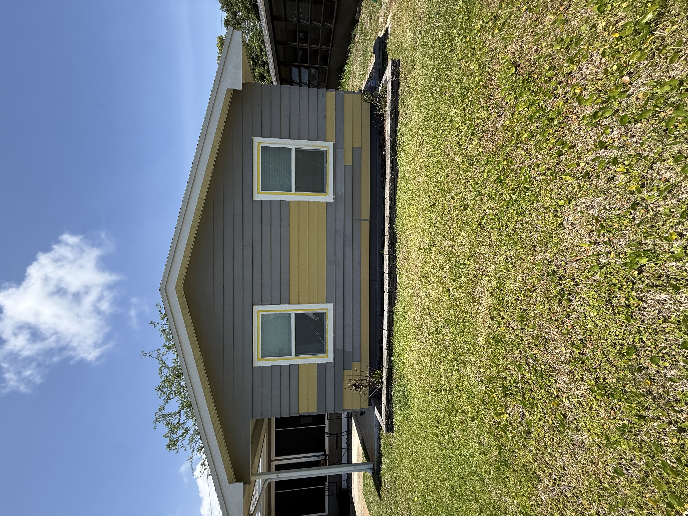
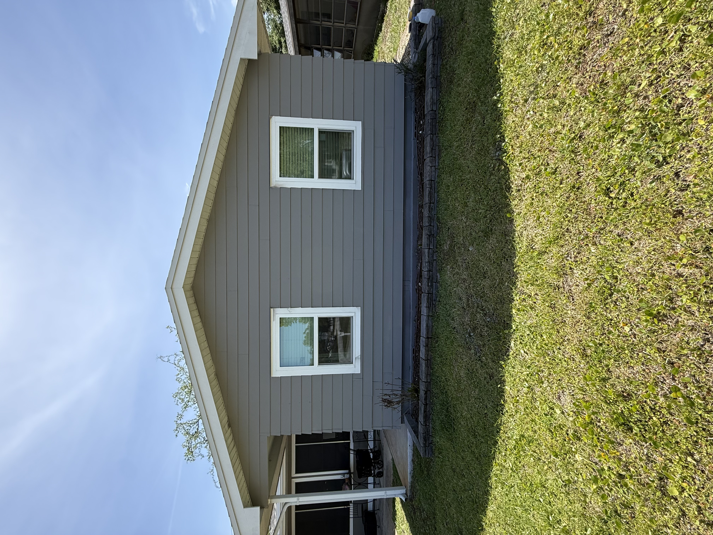

Exterior Painting St Augustine, FL
Protect and beautify your home with expert exterior painting St Augustine homeowners rely on. Coastal sun, salt air, and Florida storms demand proper prep and rated coatings—Sunset Home Painting delivers both from our base in Saint Augustine, FL 32084.
When you need exterior painting St Augustine done right, you want a crew that shows up on time, protects landscaping and hardscapes, and finishes with clean lines and paint systems built for humidity and UV. That is how we work on every project—from historic downtown homes to beach-adjacent properties in St. Johns County.
Built for Coastal Florida
Exterior painting St Augustine homes means addressing mildew, chalking paint, and wood rot before new color goes on. Our crews use high-quality acrylic systems designed for humidity and sun exposure common from St. Augustine Beach to Vilano Beach and World Golf Village.


Exterior Painting St Augustine: What We Paint
- Siding, stucco, and masonry
- Trim, fascia, soffits, and shutters
- Front doors, porches, and railings
- Power washing, scraping, caulking, and priming
Our Exterior Painting Process
- Free estimate — we review siding, trim, and repairs on site and answer your questions
- Prep & protection — power wash, scrape, caulk, prime, and cover landscaping
- Prime & paint — Florida-rated coatings in the right number of coats
- Final walkthrough — touch-ups and a clean job site before we leave
Areas We Serve for Exterior Painting
We provide exterior painting St Augustine and throughout Northeast Florida. Common communities include:
See our full service areas or project gallery for photos of recent exterior work.
Why Choose Sunset Home Painting
- Local & family-owned — based in Saint Augustine, FL 32084
- 10+ years of exterior and interior painting in St. Johns County
- Coastal experience — products and prep for salt air and humidity
- Free estimates — clear scope and pricing before we start
Pair With Interior Painting
Many clients book interior painting St Augustine and exterior work together for a coordinated refresh. Explore our coastal exterior painting guide or painting St Augustine overview for more detail.
Common Questions About Exterior Painting St Augustine
How much does exterior painting St Augustine cost?
Price depends on square footage, stories, and surface condition. We provide free written estimates—schedule online or call (386) 405-3015.
How long does an exterior repaint take?
Most full exterior projects take several days to a week, depending on prep and weather. We include a timeline with your estimate.
Do you paint historic and coastal homes?
Yes. We understand older substrates, careful prep, and coatings suited to salt exposure. Read our coastal exterior tips.
More answers on our FAQ page.